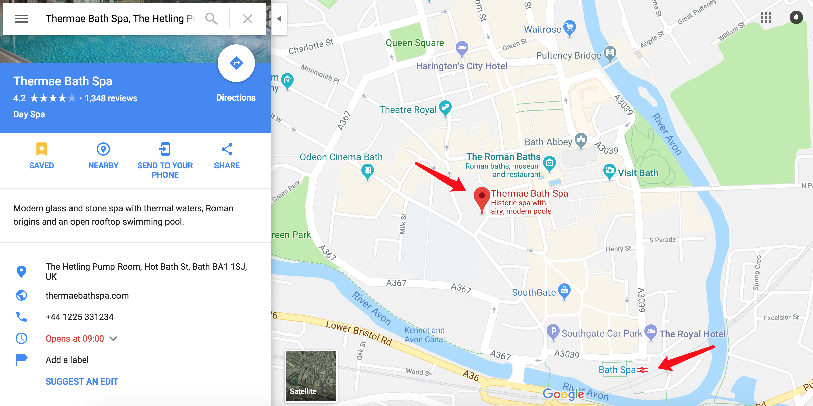
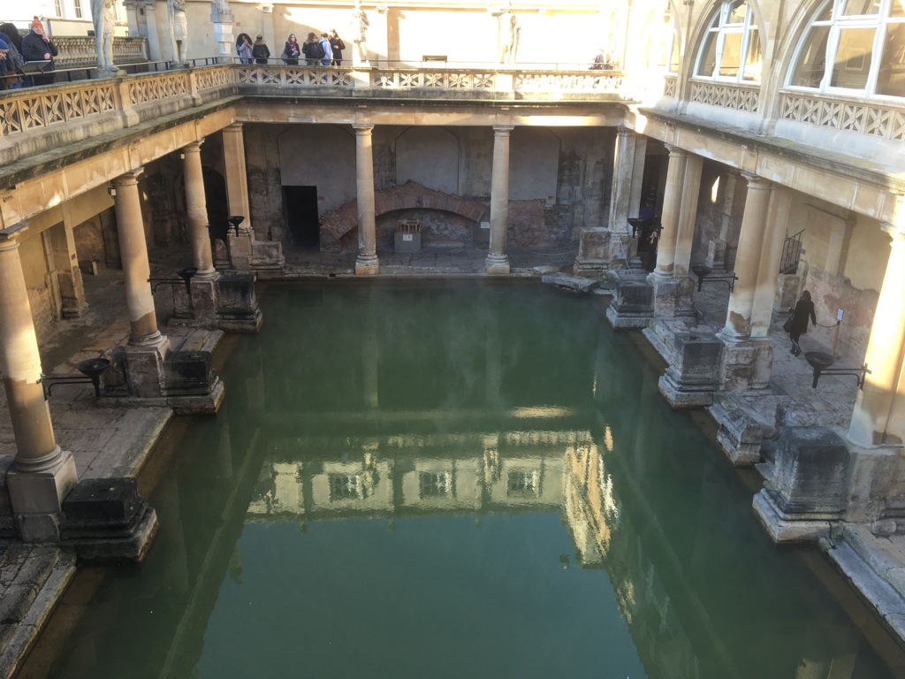
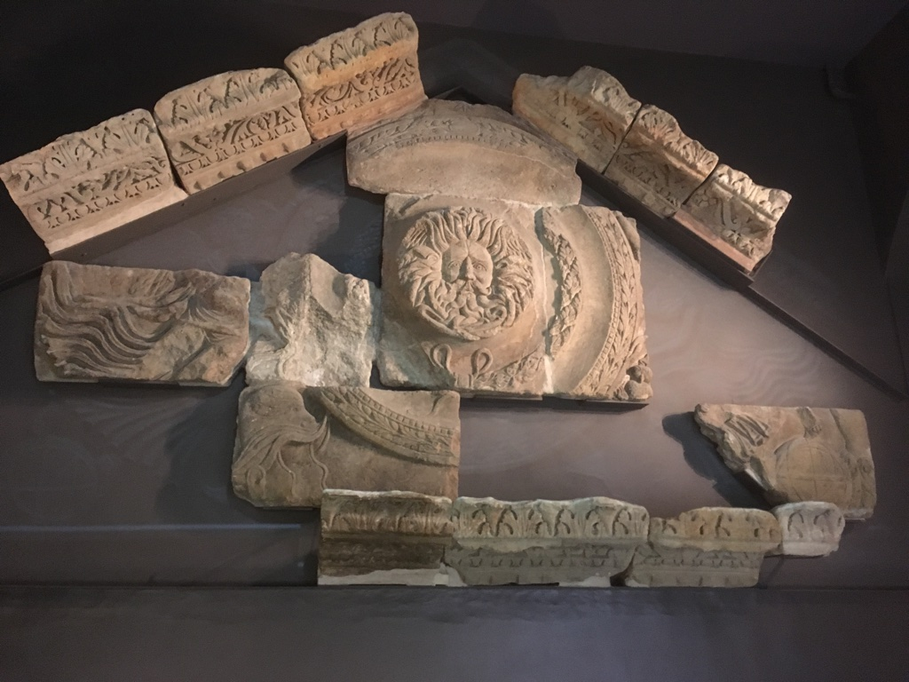
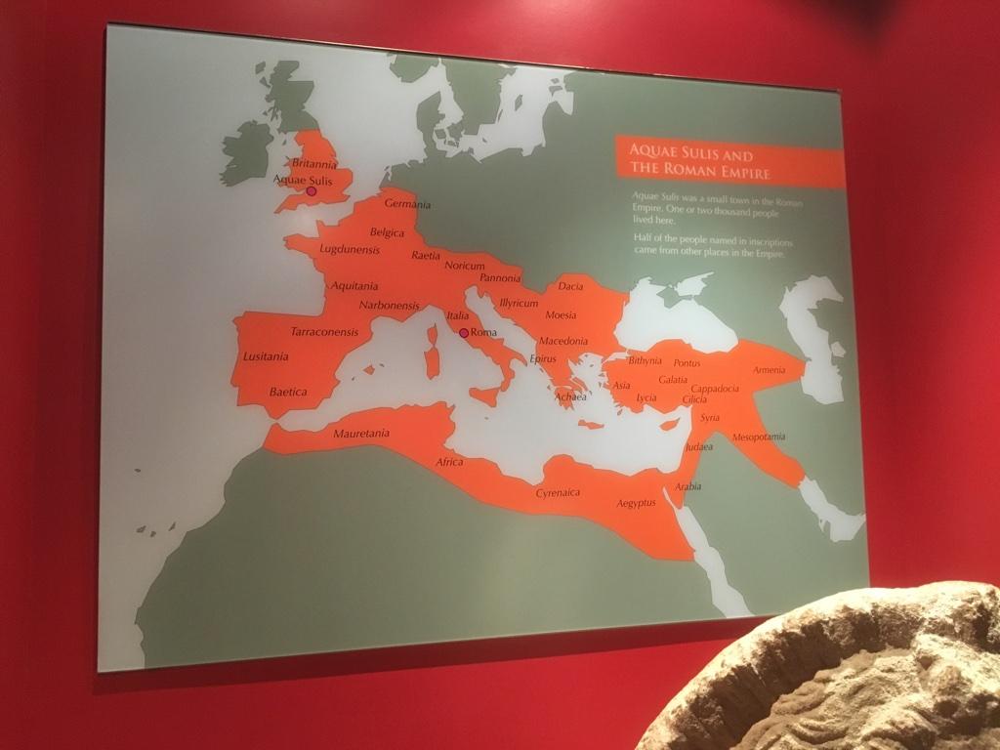
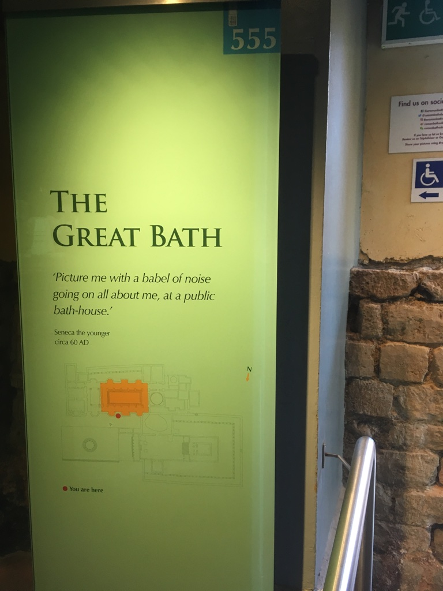
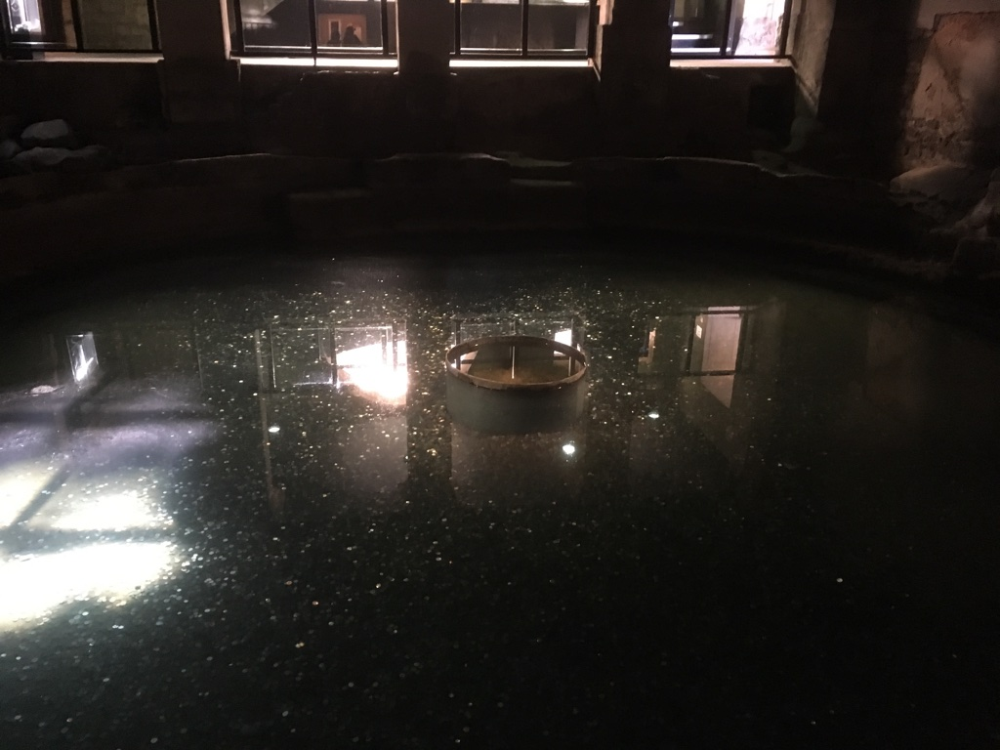
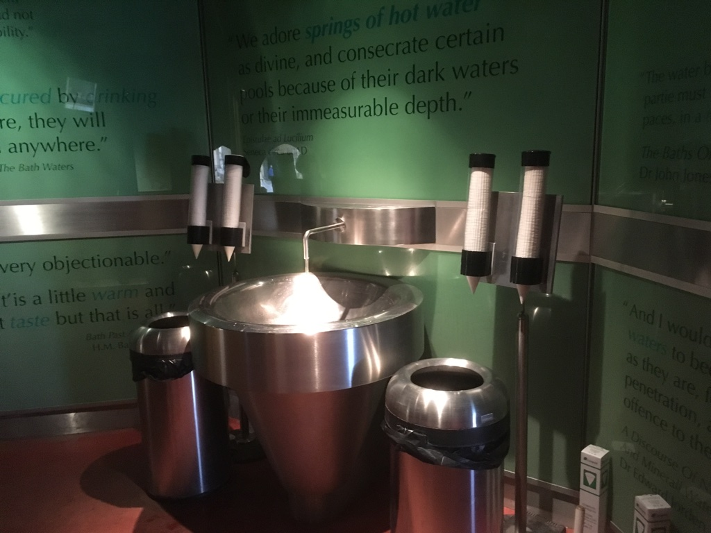
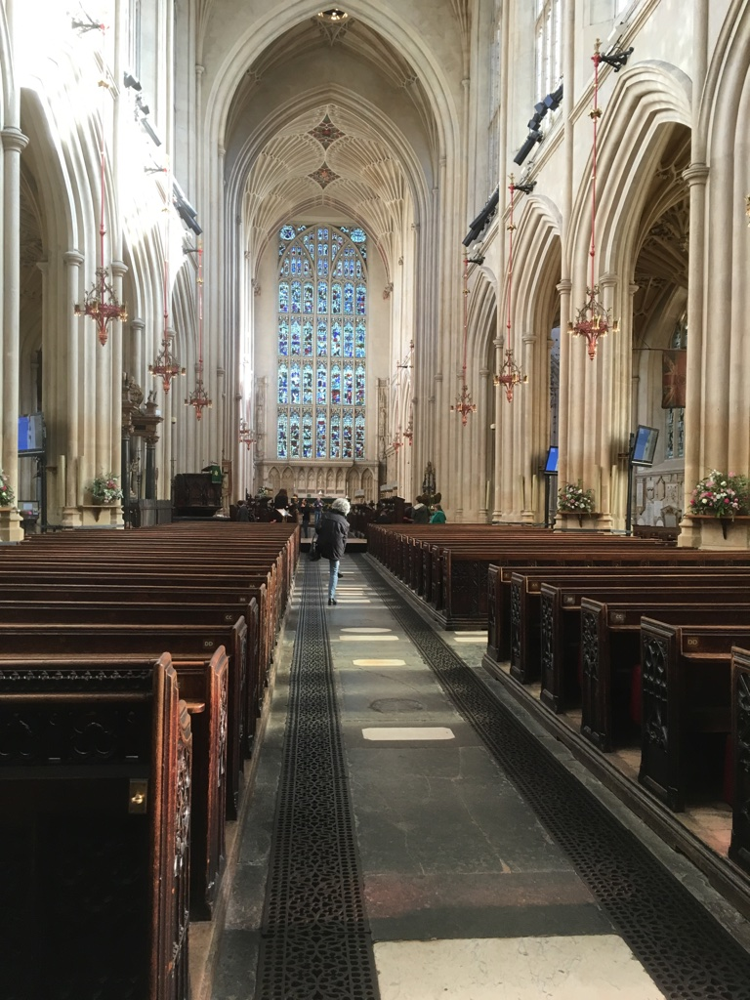

After 4 days in London, we took the train from Paddington Station (Yes, paddington bear lives there) and went towards Bath.
Day 5 in Bath
As name self-explained, Bath is named because it was the place for Romans to take shower. We actually arrived in the afternoon on Day 4 so we stayed overnight in the Bath. Well, since we stayed in Bath, we literally chose a spa to experience the real roman bath. There are lots of spa places in the Bath, according to our own experience, I recommend this one - “Thermae Bath Spa”.
Two reasons:
- It’s very closed to the central area (nearby The Roman Bath Museum and Bath Abbey);
- It has an open rooftop swimming pool.
Here is the map:

The Roman Bath Museum
It’s probably the most famous place and a “must-to-go” place when you visit the Bath as the whole city was created for that purpose. There are loads of history stories and ancient stuff back to 2,000 years ago. I don’t want to introduce very detailed about the history here (you can find them online everywhere), just wanna to share some beatiful photos which I took inside.
Here we go, the first one is always the most famous one:
The Roman Bath!

Roman’s goddess - Sulis Minerva and the Gorgon’s head which dominates the Roman Temple pediment:

The Roman Empire Map:

The Great Bath:

It seems people from different countries over the world all like to throw coins into the pool!

Tried one tiny drink, not fancy actually:

Bath Abbey
It’s actually free to visit but just require donation. It’s not allowed to take photos inside officially, but took just one ;)
Inside of Bath Abbey:

But outside are absolutely beautiful:
Small ground:
Jane Austen - Bath’s most famous resident
Unfortunately, we didn’t have enough time to explore the centre but if you like Jane Austen, it’s a place you must to visit in the Bath:

The Circus
Historic architectural landmark featuring townhouses curving around a circular grassy area. Personally, I like this type of Geroge buildings as I have worked in such building for nearly 3 years in Limerick city centre. Still remember three words I learned about the building - Fan light, Light well and Foot strap.
The Royal Crescent
Another Georgian-era residences:
Pulteney Bridge
Another landmark which built in 1774 and inside of Parade Gardens Bath
In the end
There are acutally more museums and gardens in the Bath very worth visiting and exploring. However, we only stayed there one night and half day so didn’t get enough time. In addition, my girlfriend and I both very liked this city, small, clean, full of Historic buildings and also lots of shops. University of Bath is very top ranked among all British universities. It’s probably very good to study and live in this city.
In the next article, I will introduce our self-driving trips in the western-east of England - Day 6 in Bristol!
Happy Bank Holiday tomorrow and have a good night!